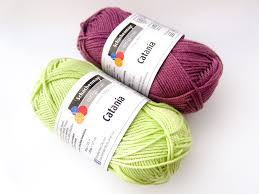
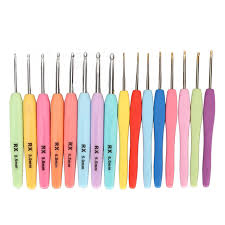
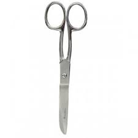
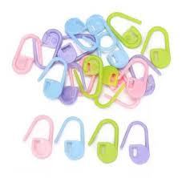

APRENDE CON NOSOTROS
by Lizeth Rodriguez Serna Diciembre 9, 2024.
| Materiales | Descripción |
|---|---|
|  | Elige el hilo en función del proyecto que vayas a tejer a croché. Para los hilos, hay una gran variedad de materiales, colores, texturas, pesos y niveles de durabilidad. Pueden ser baratos o bastante caros, pero los hay de todos los precios. Puedes encontrar hilos de algodón, hilo acrílico, seda y lana de animal (oveja, cabra, alpaca, conejo...), así como combinados.Los principiantes deberían empezar con hilos de un color más claro (es más fácil ver los puntos) |
|  | Los ganchos de croché están disponibles en varias longitudes y tamaños, y el tamaño que necesites dependerá del hilo que utilices. Los hilos llevan una etiqueta con sugerencias sobre el tamaño de gancho más adecuado para trabajar con ellos.existen en otras variedades, como los que tienen mangos ergonómicos o acolchados, o los de madera tallados a mano. |
|  | Necesitarás unas tijeras para cortar el hilo al principio y al final de los proyectos. Cualquiera que funcione bien servirá, pero un par pequeño con un extremo fino para cortar es lo más conveniente para tejer a croché. Si tienes unas tijeras especiales para cortar hilo en tu kit de costura, también son útiles. |
|  | Los marcadores de punto de bloqueo son especialmente útiles si dejas de lado un proyecto aún no terminado durante un tiempo y no quieres que se suelte ningún punto de croché. |